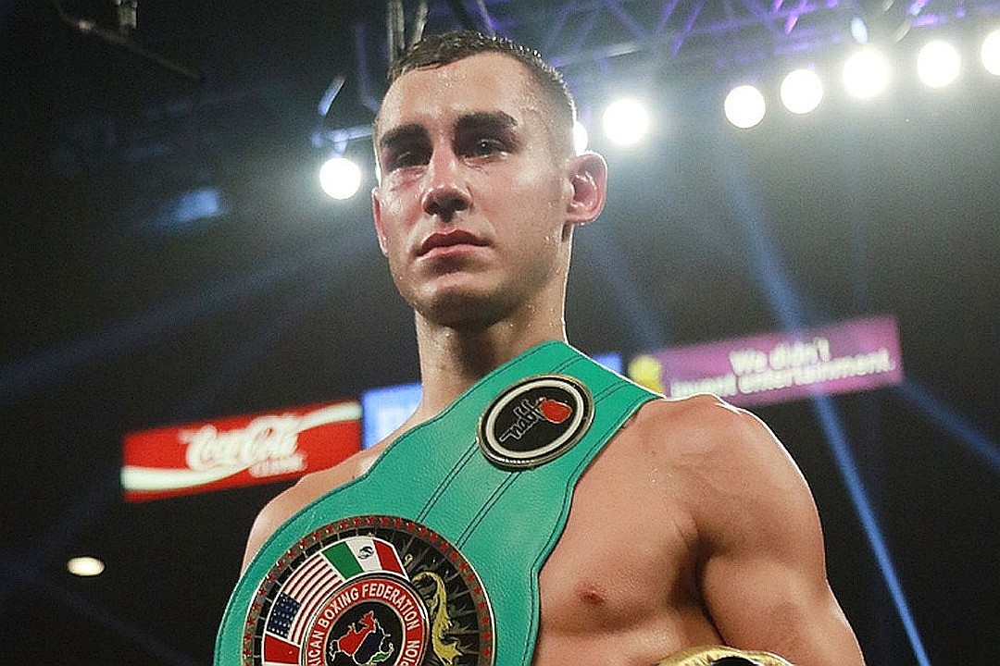
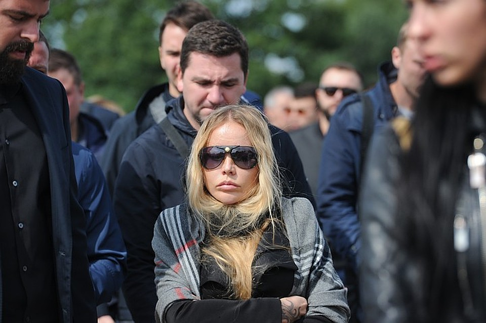
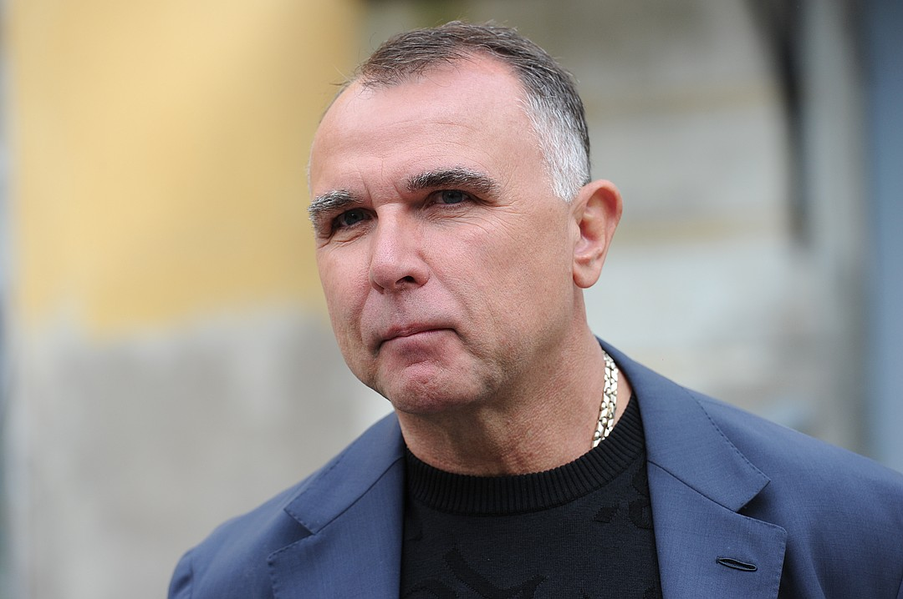

Морг Петергофа с самого утра был блокирован десятками машин родственников и друзей Максима Дадашева. Пришедшие проститься со спортсменом шептались: «Эта восходящая звезда потухла слишком рано». Максиму было всего 28 лет. Он претендовал на титул чемпиона мира по боксу. И все последние несколько лет он шел к своей мечте. В борьбе за свою мечту он погиб. 11 бешеных раундов, более 300 точных пропущенных ударов, 33 минуты поединка, который стал для Дадашева последним.
Перевозкой тела спортсмена из США занималась супруга Елизавета. Она приехала к месту прощания самой первой в окружении подруг и в темных очках, чтобы окружающие не видели ее слезы. - Он всегда шел до конца, - вздохнула вдова Максима. – Начинал тренировки уже через три дня после боя. Я у него спрашивала: «Почему ты не отдыхаешь?». А он отвечал: «Пока я отдыхаю, мои противники тренируются». Я не знаю, как пережить его смерть. Помогают только антидепрессанты.
Прощание с Максимом проходило по мусульманским обычаям. На церемонии собралось более сотни человек. Проститься с боксером пришли его родственники, друзья и спортсмены. Первой подойти к открытому гробу дали жене боксера. Потом подвели мать Максима, ее плач был слышен за десятки метров. Два года назад она похоронила Дадашева-старшего. Семья жила небогато. Именно поэтому Максим всеми силами стремился пробиться в большой спорт.

Максим провел на профессиональном ринге 14 поединков
"Я не могу перенести этот бой"
После переезда в США он провел в профессиональном боксе 13 тяжелых боев, не проиграв ни разу. Такая нагрузка сильно сказалась на его организме.
- Я общался с Максом в день боя, - рассказал «КП-Петербург» катмэн (специалист по подготовке организма бойца) сборной России по боксу и друг Дадашева Антон Кадушин. - Я спросил о его состоянии. Он сказал, что отлично провел лагерь. Состояние у него прекрасное. Вот его слова: «Я спаринговал по четыре минуты с тремя партнерами, я их просто выносил». Я спросил: «Как он спал?». Он ответил, что классно. Сказал, что восстановился. Я ему предложил покушать что-нибудь сладенькое, чтобы поднять настроение. Он согласился, объяснил, что как раз идет на второй завтрак.
Максим был в хорошем настроении в день боя. Но незадолго до этого, он все же признавался, что работает на износ. Из-за этого Дадашева предлагали перенести бой.
- Мне кажется, это произошло из-за накопительной усталости Максима, - поясняет Кадушин. - Он провел за год четыре тяжелых боя, к которым серьезно готовился. Он не щадил себя в тренировках. Когда я с ним занимался, я понял, что его надо выгонять из зала, чтобы он закончил тренировку. Человек был максималистом. Перед боем он жаловался, что он мало спит, не может спать. Состояние у него было не очень хорошее. Он говорил: Я не могу перенести бой, либо я буду драться, либо меня отодвинут на задворки».

Вдове Дадашева Елизавете предстоит одной растить сына.
"Он думал не о голове, а о паражении"
У Максима в США была только одна цель – стать чемпионом мира.
- Амбиции были сумасшедшие, - вздыхает Антон Кадушин. - У него все было, чтобы стать чемпионом мира. Он был ярким, зрелищным, харизматичным. Мы практически ежедневно общались. Но Макс такой человек, что никогда не рассказывал сокровенного. Очень мало говорил о семье. Я знал, что они полетят куда-то отдыхать после этого боя. Самое главное, что он всегда молчал о проблемах, не просил о помощи, даже если очень тяжело. После этого смертельного поединка я потом от его жены узнал, что у Макса вообще не осталось денег. Я не понимал, на что он жил, что он ел. Человек шел к своей цели, хотел заработать деньги для семьи. Он никогда не просил о помощи, даже если будет тяжело. Я после поединка написал Максима сообщение, просил перезвонить. Хотел сказать, что и великие проигрывают. Я не знал, что его состояние тяжелое.
Вся карьера Максима, по словам друзей, была тяжелой борьбой.
- Мы здесь стоим все и вспоминаем Максим , были и веселы истории с ним, - рассказывает боксер и друг детства Дадашева Дмитрий Бивол. - Макс всегда себя загонял. Он был ответственный, все доводил до ума. Очень сильно переживал из-за боев. Были случаи, он заснуть не может. Мы лежим в комнате, а он кричит: «Выключите телевизор, закройте шторы!». Ему нужен был полный покой. Но он любил и повеселиться. Был душевный парень. Улыбался открыто, глаза такие светлые. Хоть и судьба была у него тяжелая. У него просто стиль ведения боя: всегда идти первым. Бои у него из-за этого были тяжелы. Он работал на выносливости. Но его очень засуживали. При любых спорных ситуациях победу отдавали другому. У каждого спортсмена свой путь. Он прошелся по самому сложному. Видно было, что в этом бою он очень переживал. Самое обидное, что после боя он думал не о том, что у него болит голова, а о том, что он проиграл.

Менеждер российского спортсмена Эгис Климас прилетел из США, чтобы лично с ним попрощаться.
"Нужно купить дом для семьи"
Победа для Максима и чемпионский титул была мечтой, к которой он шел ради семьи. В этом Дадашев признавался в своих записках, которые нашли в его комнате после смерти.
- Настрой у Максима был боевой, - пояснил «КП» менеджер Дадашева Эгис Климас, прилетевший на похороны из США. - Он был крепкий, сильный, всегда сосредоточенный. Никто не думал, что так получится. Он жил в доме, который я снимал, с другими спортсменами. Когда он умер, я зашел к нему в комнату. На стенах у него были надписи, которые он сделал своей рукой: «стать чемпионом», «купить дом», «содержать семью». Так он мотивировал себя. Когда ложился на кровать, смотрел на них.
Причина смерти Максима, по словам менеджера, до сих пор неизвестна.
- Экспертиза сделана, но выписки пока нет, - пояснил Климас. – У него было сотрясение мозга, кровоизлияние. Перед боем он прошел полностью всю медицину. В штатах это строго: МРТ, кардиограмма. Сдал полностью все документы. Трудно рассуждать по поводу боя. Будет ли судебный процесс неизвестно. Я его знал с первого дня, как он приехал в Америку. Он всегда просил, чтобы у него были сильные соперники. У него не было легких боев. К каждому он был готов на 100 процентов. Макс не показывал, что ему плохо. Он в 9 раунде еще сам потряс своего соперника. Он может и что-то чувствовал, но он не показывал. Перед 10 раундом у него тренер спрашивал: «Макс, давай остановим бой». Он не стал.
Последние слова, которые произнес Дадашев, были: «Я хочу пойти в раздевалку».
- Он был зациклен на тренировках: по две в день. Утром в бассейн ходил, бегал. Во второй половине дня в боксерском зале тренировался, - поясняет менеджер Максима. - Выиграв этот бой, он бы стал вторым номером. И следующий бой мог быть уже за титул чемпиона мира.
Среди пришедших проститься с Максимом были и чемпионы мира по боксу, которые пристально следили за карьерой Дадашева.
- Я познакомился с Максом лет 10 назад, - пояснил "КП" чемпион мир по боксу Дмитрий Кириллов. - Тренировался он одно время у меня. Он очень хороший боксер был. К его выступлениям всегда был его интерес. Было тяжело видеть это все. Я сам был в его состоянии. Ты боксируешь, когда у тебя сознание отключается, но ты не можешь дать заднюю. Ты выходишь за свою страну, за своих детей. И ты не можешь взять и сдаться. Он шел до конца, хотя знал, что это опасно для его здоровья. Но он не сделал шаг назад. Он воин. Но сказалось число пропущенных ударов.
Все коллеги Максима уверены, если бы не смерть, он бы стал чемпионом мира и исполнил бы мечту. Для среды боксеров смерть Дадашева стала большой потерей.
У Дадашева остались жена и маленький ребенок.